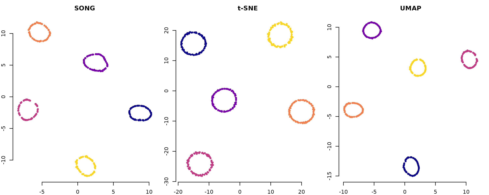
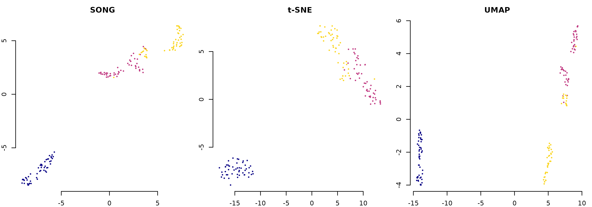

Reproducing Paper Figures with songR
Raban Heller
2026-08-22
Source:vignettes/articles/reproducing_paper_figures.Rmd
reproducing_paper_figures.Rmd


Overview
This article reproduces key experiments from the SONG paper using the
songR package:
Senanayake, D. A., Wang, W., Naik, S. H., & Halgamuge, S. (2021). Self-Organizing Nebulous Growths for Robust and Incremental Data Visualization. IEEE TNNLS, 32(10), 4588-4602.
All figures use the viridis plasma color scale. For
full-scale reproductions with large datasets, see the
tutorials/ folder in the repository.
Plasma Color Helpers
# Standard scatter using plasma palette
plot_plasma <- function(emb, labels, title = "", pch = 16, cex = 0.5) {
if (is.factor(labels) || is.character(labels)) {
labels <- as.factor(labels)
cols <- viridis::plasma(nlevels(labels), end = 0.92)[as.integer(labels)]
} else {
cols <- viridis::plasma(256)[cut(labels, 256, labels = FALSE)]
}
plot(emb[, 1], emb[, 2], col = cols, pch = pch, cex = cex,
xlab = "Dim 1", ylab = "Dim 2", main = title, bty = "n")
}Figure 3/4: Heterogeneous Increments (Fashion-MNIST / MNIST)
The paper adds 2 new classes per step and tracks how each method handles the growing embedding. SONG updates incrementally; t-SNE and UMAP refit from scratch.
Here we demonstrate the principle on the bundled
songR_blobs dataset (8 clusters, 20D), adding 2 clusters
per step:
data(songR_blobs)
X <- songR_blobs$data
labs <- as.integer(songR_blobs$labels)
# Define 4 incremental steps: 2 clusters each
set.seed(SEED)
cluster_order <- sample(8)
steps <- list(cluster_order[1:2], cluster_order[3:4],
cluster_order[5:6], cluster_order[7:8])
step_names <- c("2 clusters", "4 clusters", "6 clusters", "8 clusters")
# Build data for each step
X_list <- lapply(steps, function(cls) X[labs %in% cls, , drop = FALSE])
lab_list <- lapply(steps, function(cls) labs[labs %in% cls])
# SONG incremental
song_embs <- list()
model <- NULL; X_seen <- NULL
for (s in seq_along(X_list)) {
X_seen <- rbind(X_seen, X_list[[s]])
if (is.null(model)) {
model <- song(X_seen, epochs = 15L, seed = SEED, verbose = FALSE)
} else {
model <- update(model, X_list[[s]], epochs = 15L, verbose = FALSE)
}
song_embs[[s]] <- predict(model, newdata = X_seen)
}
# SONG + Reinit (refit from scratch each step)
reinit_embs <- list()
X_seen <- NULL
for (s in seq_along(X_list)) {
X_seen <- rbind(X_seen, X_list[[s]])
m <- song(X_seen, epochs = 15L, seed = SEED, verbose = FALSE)
reinit_embs[[s]] <- m$embedding
}
# Cumulative labels for coloring
cum_labs <- list()
for (s in seq_along(steps)) cum_labs[[s]] <- unlist(lab_list[1:s])
par(mfrow = c(2, 4), mar = c(2, 2, 2.5, 1))
for (s in 1:4) {
plot_plasma(song_embs[[s]], factor(cum_labs[[s]]),
title = if (s == 1) paste0("SONG\n", step_names[s])
else step_names[s])
}
for (s in 1:4) {
plot_plasma(reinit_embs[[s]], factor(cum_labs[[s]]),
title = if (s == 1) paste0("SONG+Reinit\n", step_names[s])
else step_names[s])
}
Key observation: SONG preserves existing cluster positions as new clusters are added, while SONG+Reinit recomputes the entire layout.
Figure 5: Homogeneous Increments (Wong CyTOF)
Homogeneous increments add more data of the same distribution. The paper uses Wong CyTOF data colored by CCR7 expression. Here we demonstrate with blobs, adding random subsamples:
data(songR_blobs)
set.seed(SEED)
idx <- sample(nrow(songR_blobs$data))
sizes <- c(400, 800, 1200, 1600)
par(mfrow = c(2, 4), mar = c(2, 2, 2.5, 1))
# SONG incremental
model <- NULL; prev_n <- 0
for (s in seq_along(sizes)) {
n_s <- sizes[s]
if (prev_n == 0) {
X_chunk <- songR_blobs$data[idx[1:n_s], ]
model <- song(X_chunk, epochs = 15L, seed = SEED, verbose = FALSE)
} else {
X_chunk <- songR_blobs$data[idx[(prev_n + 1):n_s], ]
model <- update(model, X_chunk, epochs = 15L, verbose = FALSE)
}
emb <- predict(model, newdata = songR_blobs$data[idx[1:n_s], ])
cur_labs <- songR_blobs$labels[idx[1:n_s]]
plot_plasma(emb, cur_labs,
title = if (s == 1) paste0("SONG\nn=", n_s) else paste0("n=", n_s))
prev_n <- n_s
}
# SONG+Reinit
for (s in seq_along(sizes)) {
n_s <- sizes[s]
m <- song(songR_blobs$data[idx[1:n_s], ], epochs = 15L, seed = SEED, verbose = FALSE)
cur_labs <- songR_blobs$labels[idx[1:n_s]]
plot_plasma(m$embedding, cur_labs,
title = if (s == 1) paste0("SONG+Reinit\nn=", n_s) else paste0("n=", n_s))
}
Figure 6: CDY (Consecutive Displacement of Y)
CDY measures how much existing points move when new data is added. Lower CDY = more stable embedding.
data(songR_blobs)
set.seed(SEED)
idx <- sample(nrow(songR_blobs$data))
X <- songR_blobs$data[idx, ]
labs <- songR_blobs$labels[idx]
init_n <- 400
step_n <- 300
n_steps <- 4
# SONG incremental CDY
model <- song(X[1:init_n, ], epochs = 15L, seed = SEED, verbose = FALSE)
prev_emb <- predict(model, newdata = X[1:init_n, ])
song_cdy <- numeric(n_steps)
bound <- init_n
for (i in seq_len(n_steps)) {
new_bound <- bound + step_n
model <- update(model, X[(bound + 1):new_bound, ], epochs = 15L, verbose = FALSE)
curr_emb <- predict(model, newdata = X[1:bound, ])
song_cdy[i] <- mean(sqrt(rowSums((prev_emb - curr_emb)^2)))
prev_emb <- predict(model, newdata = X[1:new_bound, ])
bound <- new_bound
}
# SONG+Reinit CDY
model0 <- song(X[1:init_n, ], epochs = 15L, seed = SEED, verbose = FALSE)
prev_emb <- model0$embedding
reinit_cdy <- numeric(n_steps)
bound <- init_n
for (i in seq_len(n_steps)) {
new_bound <- bound + step_n
m <- song(X[1:new_bound, ], epochs = 15L, seed = SEED, verbose = FALSE)
reinit_cdy[i] <- mean(sqrt(rowSums(
(prev_emb - m$embedding[1:nrow(prev_emb), ])^2)))
prev_emb <- m$embedding
bound <- new_bound
}
# Plot
method_cols <- viridis::plasma(4, end = 0.92)
plot(1:n_steps, song_cdy, type = "b", pch = 16, col = method_cols[1],
ylim = c(0, max(c(song_cdy, reinit_cdy)) * 1.1),
xlab = "Increment", ylab = "Mean CDY",
main = "CDY: Embedding Stability", bty = "n", lwd = 2)
lines(1:n_steps, reinit_cdy, type = "b", pch = 17, col = method_cols[3], lwd = 2)
legend("topright", c("SONG (incremental)", "SONG+Reinit"),
col = method_cols[c(1, 3)], pch = c(16, 17), lwd = 2, bty = "n")
Key result: SONG (incremental) displaces existing points far less than reinitialized methods. In the paper, t-SNE shows CDY 10-50x higher than SONG.
Figure 7 / Table IV: Noise Tolerance (Gaussian Blobs)
The paper tests 32 configurations of Gaussian blobs (8 noise levels x 4 cluster counts, 60D). SONG maintains cluster quality even at high noise.
simulate_blobs <- function(k, noise_sd, d = 20, n_per = 100, seed = 42) {
set.seed(seed)
centers <- matrix(rnorm(k * d, sd = 30), ncol = d)
data <- do.call(rbind, lapply(1:k, function(i)
sweep(matrix(rnorm(n_per * d, sd = noise_sd), ncol = d), 2, centers[i, ], "+")))
list(data = data, labels = factor(rep(1:k, each = n_per)))
}
# Low noise vs high noise at 10 clusters
blobs_low <- simulate_blobs(10, 4)
blobs_high <- simulate_blobs(10, 16)
par(mfrow = c(1, 3), mar = c(2, 2, 2.5, 1))
m1 <- song(blobs_low$data, epochs = 20L, seed = SEED, verbose = FALSE)
plot_plasma(m1$embedding, blobs_low$labels, title = "SONG (std=4, k=10)")
m2 <- song(blobs_high$data, epochs = 20L, seed = SEED, verbose = FALSE)
plot_plasma(m2$embedding, blobs_high$labels, title = "SONG (std=16, k=10)")
# High noise, more clusters
blobs_many <- simulate_blobs(20, 12, n_per = 50)
m3 <- song(blobs_many$data, epochs = 20L, seed = SEED, verbose = FALSE)
plot_plasma(m3$embedding, blobs_many$labels, title = "SONG (std=12, k=20)")
The full tutorial 06_fig7_table_IV_noise_tolerance.R
computes AMI scores across all 32 configurations and compares SONG,
t-SNE, and UMAP. Typical results: SONG achieves AMI 85-95 across all
conditions.
Figure 8: COIL-20 Topology Preservation
COIL-20 contains 20 objects photographed at 72 angles (360 degrees). The underlying topology is circular. SONG and UMAP preserve this; t-SNE distorts it into arches.
# Simulate 5 objects with circular topology
set.seed(SEED)
n_poses <- 72
sim_data <- list()
for (obj in 1:5) {
angles <- seq(0, 2 * pi, length.out = n_poses + 1)[-(n_poses + 1)]
b1 <- rnorm(10); b1 <- b1 / sqrt(sum(b1^2))
b2 <- rnorm(10); b2 <- b2 - sum(b2 * b1) * b1; b2 <- b2 / sqrt(sum(b2^2))
center <- rnorm(10, sd = 5)
r <- runif(1, 1, 3)
sim_data[[obj]] <- sweep(r * (outer(cos(angles), b1) + outer(sin(angles), b2)),
2, center, "+") + matrix(rnorm(n_poses * 10, sd = 0.1), ncol = 10)
}
X_coil <- do.call(rbind, sim_data)
labs_coil <- factor(rep(1:5, each = n_poses))
par(mfrow = c(1, 3), mar = c(2, 2, 2.5, 1))
m_song <- song(X_coil, epochs = 25L, seed = SEED, verbose = FALSE)
plot_plasma(m_song$embedding, labs_coil, title = "SONG", cex = 0.8)
if (requireNamespace("Rtsne", quietly = TRUE)) {
set.seed(SEED)
emb_tsne <- Rtsne::Rtsne(X_coil, dims = 2, perplexity = 20,
check_duplicates = FALSE, verbose = FALSE)$Y
plot_plasma(emb_tsne, labs_coil, title = "t-SNE", cex = 0.8)
} else {
plot.new(); text(0.5, 0.5, "Rtsne not installed")
}
if (requireNamespace("uwot", quietly = TRUE)) {
set.seed(SEED)
emb_umap <- uwot::umap(X_coil, n_neighbors = 15, min_dist = 0.1, verbose = FALSE)
plot_plasma(emb_umap, labs_coil, title = "UMAP", cex = 0.8)
} else {
plot.new(); text(0.5, 0.5, "uwot not installed")
}
Expected: Circular/elongated clusters in SONG and UMAP, arch shapes in t-SNE.
Table II / III: AMI Scores
The paper reports AMI (Adjusted Mutual Information) after k-means clustering on the embeddings. Here we compute AMI on the blobs dataset:
if (requireNamespace("aricode", quietly = TRUE)) {
data(songR_blobs)
m <- song(songR_blobs$data, epochs = 20L, seed = SEED, verbose = FALSE)
km <- kmeans(m$embedding, centers = 8, nstart = 10)
ami <- aricode::AMI(as.integer(songR_blobs$labels), km$cluster) * 100
cat(sprintf("SONG AMI on songR_blobs: %.1f%%\n", ami))
if (requireNamespace("uwot", quietly = TRUE)) {
set.seed(SEED)
emb_u <- uwot::umap(songR_blobs$data, verbose = FALSE)
km_u <- kmeans(emb_u, centers = 8, nstart = 10)
ami_u <- aricode::AMI(as.integer(songR_blobs$labels), km_u$cluster) * 100
cat(sprintf("UMAP AMI on songR_blobs: %.1f%%\n", ami_u))
}
} else {
cat("Install aricode for AMI computation: install.packages('aricode')\n")
}
#> SONG AMI on songR_blobs: 100.0%
#> UMAP AMI on songR_blobs: 100.0%Comparison: SONG vs t-SNE vs UMAP on Iris
X <- as.matrix(iris[, 1:4])
labs <- iris$Species
par(mfrow = c(1, 3), mar = c(2, 2, 2.5, 1))
m <- song(X, epochs = 15L, seed = SEED, verbose = FALSE)
plot_plasma(m$embedding, labs, title = "SONG")
if (requireNamespace("Rtsne", quietly = TRUE)) {
set.seed(SEED)
emb_t <- Rtsne::Rtsne(X, dims = 2, perplexity = 30,
check_duplicates = FALSE, verbose = FALSE)$Y
plot_plasma(emb_t, labs, title = "t-SNE")
}
if (requireNamespace("uwot", quietly = TRUE)) {
set.seed(SEED)
emb_u <- uwot::umap(X, verbose = FALSE)
plot_plasma(emb_u, labs, title = "UMAP")
}
Running the Full Tutorial Suite
For full-scale paper reproduction with MNIST (70k), Fashion-MNIST (70k), Wong CyTOF (1.27M), Samusik (87k), and COIL-20 (1440):
setwd("path/to/songR")
# Install dependencies and prepare data
source("tutorials/00_install_dependencies.R")
source("tutorials/01_prepare_data.R")
# Figures (output PDFs in tutorials/output/)
source("tutorials/02_fig3_fashion_mnist_heterogeneous.R")
source("tutorials/03_fig4_mnist_heterogeneous.R")
source("tutorials/04_fig5_wong_homogeneous.R")
source("tutorials/05_fig6_cdy_lines.R")
source("tutorials/06_fig7_table_IV_noise_tolerance.R")
source("tutorials/07_fig8_coil20_topology.R")
# Tables (output CSVs in tutorials/output/)
source("tutorials/08_table_II_heterogeneous_ami.R")
source("tutorials/09_table_III_homogeneous_ami.R")All scripts have FAST_MODE <- TRUE at the top. Set to
FALSE for full paper-scale experiments.
Reference Parity: How Close Is songR to the Original Python?
songR is a SONG-inspired tool that implements the
algorithm of Senanayake et al. (2021) in R/C++, staying as close to the
reference implementation as is feasible — not a bit-for-bit port. It is
validated against the original Python implementation with a tiered set
of golden-fixture tests
(tests/testthat/test-reference-parity.R). The honest,
layer-by-layer answer:
| Layer | Reproduction | Evidence |
|---|---|---|
Deterministic kernels (distances, argmin, kernel
(a, b), scalars) |
near bit-identical | \le 7.6e-08 / exact (float32-vs-double floor) |
Core SONG embedding (dispersion = FALSE) — clustering
(AMI) |
statistically identical | nodisp 0.949 = 0.949 |
Default visualization (dispersion = TRUE) |
songR uses a stronger UMAP refinement; matches or beats the reference’s AMI | e.g. MNIST 0.62→0.71, on every benchmark dataset |
| Raw embedding coordinates (pre-dispersion) | same structure, different layout | blobs Procrustes R^2 \approx 0.22 |
Bit-identity of the embeddings is neither achievable nor the
goal: the reference runs in float32 with numba
fastmath and draws from two PRNG streams (numpy MT19937 + a
custom XORShift), while songR is double-precision with R’s
RNG and carries a few deliberate, documented divergences. Two faithful
SONG implementations therefore land on the same manifold
structure in different absolute coordinates. The figure below
overlays the reference and songR embeddings (the latter
Procrustes-aligned for comparison); the analysis is reproducible via
data-raw/reproduction/repro_procrustes.R.

Citation
citation("songR")Senanayake, D. A., Wang, W., Naik, S. H., & Halgamuge, S. (2021). Self-Organizing Nebulous Growths for Robust and Incremental Data Visualization. IEEE TNNLS, 32(10), 4588-4602. doi:10.1109/TNNLS.2020.3023941
Session Info
sessionInfo()
#> R version 4.6.1 (2026-06-24)
#> Platform: x86_64-pc-linux-gnu
#> Running under: Ubuntu 24.04.4 LTS
#>
#> Matrix products: default
#> BLAS: /usr/lib/x86_64-linux-gnu/openblas-pthread/libblas.so.3
#> LAPACK: /usr/lib/x86_64-linux-gnu/openblas-pthread/libopenblasp-r0.3.26.so; LAPACK version 3.12.0
#>
#> locale:
#> [1] LC_CTYPE=C.UTF-8 LC_NUMERIC=C LC_TIME=C.UTF-8
#> [4] LC_COLLATE=C.UTF-8 LC_MONETARY=C.UTF-8 LC_MESSAGES=C.UTF-8
#> [7] LC_PAPER=C.UTF-8 LC_NAME=C LC_ADDRESS=C
#> [10] LC_TELEPHONE=C LC_MEASUREMENT=C.UTF-8 LC_IDENTIFICATION=C
#>
#> time zone: UTC
#> tzcode source: system (glibc)
#>
#> attached base packages:
#> [1] stats graphics grDevices utils datasets methods base
#>
#> other attached packages:
#> [1] viridis_0.6.5 viridisLite_0.4.3 songR_0.1.0
#>
#> loaded via a namespace (and not attached):
#> [1] Matrix_1.7-5 gtable_0.3.6 jsonlite_2.0.0 compiler_4.6.1
#> [5] Rcpp_1.1.2 FNN_1.1.4.1 gridExtra_2.3.1 jquerylib_0.1.4
#> [9] systemfonts_1.3.2 scales_1.4.0 textshaping_1.0.5 yaml_2.3.12
#> [13] fastmap_1.2.0 uwot_0.2.4 aricode_1.1.0 lattice_0.22-9
#> [17] ggplot2_4.0.3 R6_2.6.1 knitr_1.51 Rtsne_0.17
#> [21] desc_1.4.3 bslib_0.12.0 RColorBrewer_1.1-3 rlang_1.3.0
#> [25] cachem_1.1.0 xfun_0.60 fs_2.1.0 sass_0.4.10
#> [29] S7_0.2.2 otel_0.2.0 cli_3.6.6 pkgdown_2.2.1
#> [33] digest_0.6.39 grid_4.6.1 irlba_2.3.7 lifecycle_1.0.5
#> [37] vctrs_0.7.3 evaluate_1.0.5 glue_1.8.1 farver_2.1.2
#> [41] ragg_1.5.2 rmarkdown_2.31 tools_4.6.1 htmltools_0.5.9